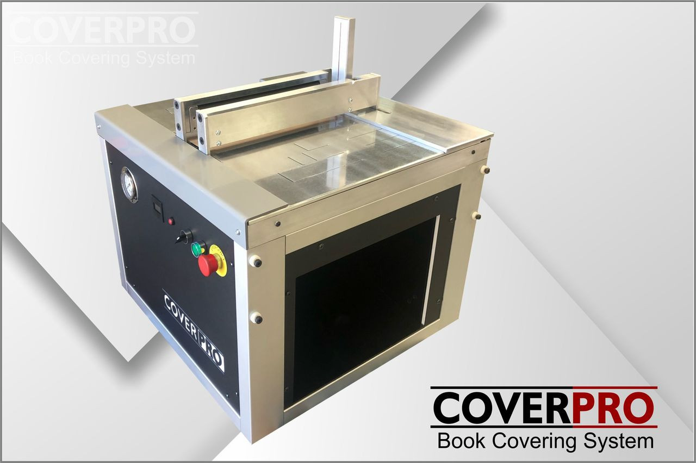

Fast & efficient
Reduce repetitive manual handling and keep batches moving.
Professional book protection
CoverPro is a robust book covering system built for schools, libraries and high-volume processing teams who want a neat, repeatable finish.

Built for production
Designed to help staff cover books accurately and efficiently, CoverPro keeps the process controlled, repeatable and easier to teach.
Reduce repetitive manual handling and keep batches moving.
Guided positioning helps produce a clean, professional result.
Simple controls and a practical working surface.
Solid construction for long-term library and school use.
See it in action
A short video showing placement, covering and finished results will do most of the selling. Keep it simple: real books, real operator, real workflow.
How it works
Position the book and covering material on the work surface.
Use the machine to wrap and apply the covering neatly.
Trim, smooth and move on to the next book with a repeatable result.
Ideal for
CoverPro is suited to teams that cover a lot of books and want a system that supports training, consistency and speed.
Specifications
Use this area for the confirmed technical details, training notes and warranty information.
Want to know more?
Tell us about your library, school or processing room and we’ll help you decide whether CoverPro is the right fit.